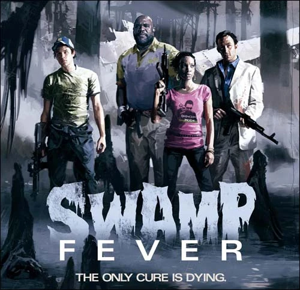

Capitulos
Capitulos
Capitulos
Las campañas son distintas partes de Left 4 Dead y Left 4 Dead 2,
se pueden jugar en cualquier orden, en total de L4D hay 6 campañas
(4 que vienen con el juego y 2 que vienen separadas)
y en L4D2 son 8 (5 que vienen con el juego y 3 que vienen por separado).
Capitulos

